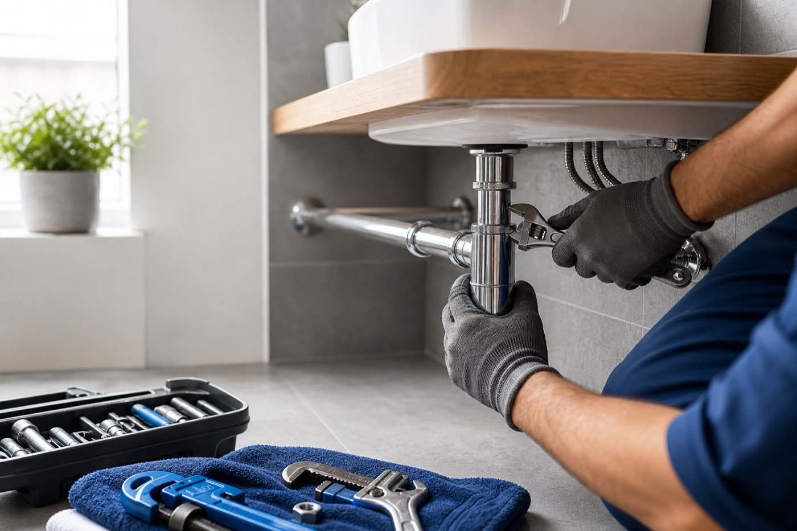

Voda a rozvody
Opravy úniků vody, výměny ventilů, baterií, hadiček a drobné úpravy rozvodů. Vždy kontrolujeme těsnost a bezpečné předání.
- úniky vody a kapající spoje
- výměny baterií a ventilů
- opravy přívodů teplé a studené vody
Kompletní instalatérské práce
Pomůžeme s vodou, odpady, topením, montážemi sanity, bojlery i akutními opravami. U každé práce vysvětlíme postup a předem řekneme, co dává smysl udělat.

Opravy úniků vody, výměny ventilů, baterií, hadiček a drobné úpravy rozvodů. Vždy kontrolujeme těsnost a bezpečné předání.
Čištění sifonů, pomalu odtékajících odpadů a zápachu z potrubí. Řekneme i doporučení, aby se problém zbytečně nevracel.
Drobné práce na topení, odvzdušnění, výměna ventilů a řešení běžných závad v bytech a domech.
Montáž, výměna a servis ohřívačů vody podle konkrétního typu zařízení a dostupnosti instalace.
Montáže umyvadel, WC, sprchových setů, baterií a drobné koupelnové úpravy bez zbytečného bourání.
Menší instalatérské úpravy při rekonstrukci koupelny, kuchyně nebo technické místnosti.
Havarijní situace
Pokud voda teče, odpad neodtéká nebo hrozí škoda, zavolejte. Podle situace se domluví nejrychlejší možný postup.